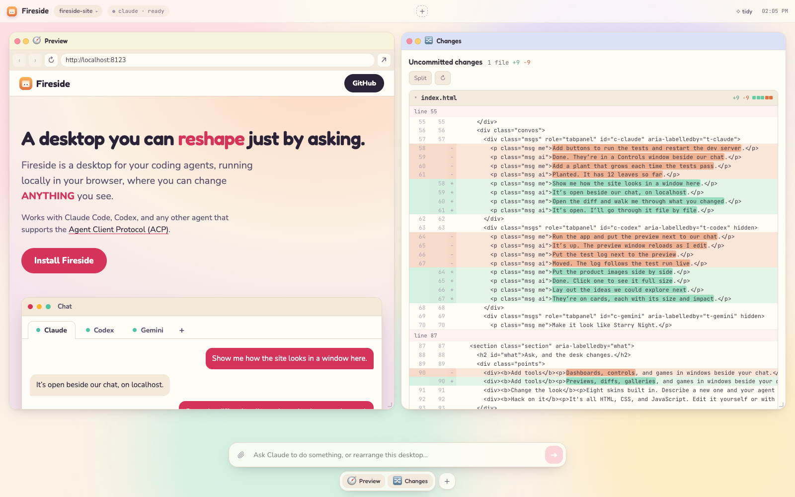

A desktop you can reshape just by asking.
Fireside is a desktop for your coding agents, running locally in your browser, where you can change ANYTHING you see.
Works with Claude Code, Codex, and any other agent that supports the Agent Client Protocol (ACP).
Show me how the site looks in a window here.
It’s open beside our chat, on localhost.
Open the diff and walk me through what you changed.
It’s open. I’ll go through it file by file.
Put the product images side by side.
Done. Click one to see it full size.
Lay out the ideas we could explore next.
They’re on cards, each with its size and impact.
Make it look like Starry Night.
New skin on: swirling sky, warm yellow light.
Add a window that shows my token usage.
Added. It updates as we talk.
Try asking
Ask, and the desk changes.
Previews, diffs, galleries, and games in windows beside your chat.
Eight skins built in. Describe a new one and your agent makes it.
It's all HTML, CSS, and JavaScript. Edit it yourself or with your agent.

Install
Needs Node 22.18+ and an agent to chat with.
Install once
$ git clone https://github.com/latent-spaces/fireside ~/fireside $ node ~/fireside/install.mjs
Start it in any project
$ cd path/to/project $ fireside